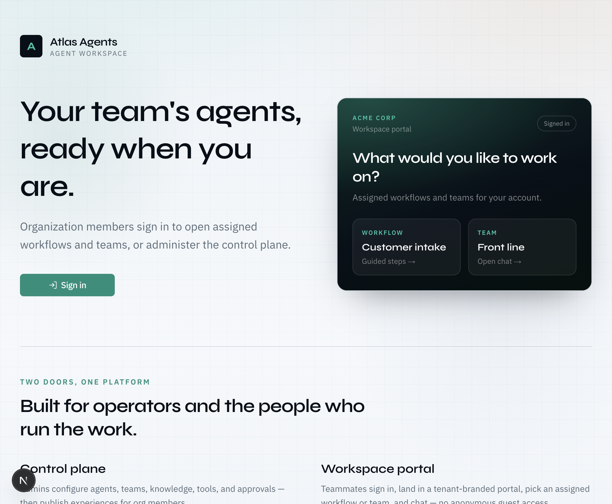
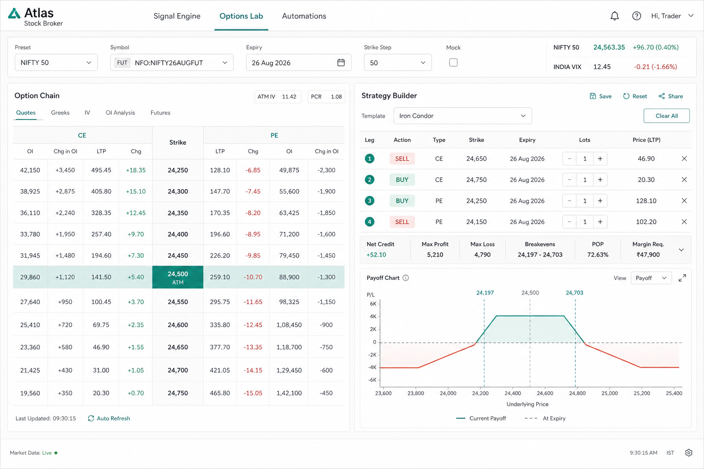
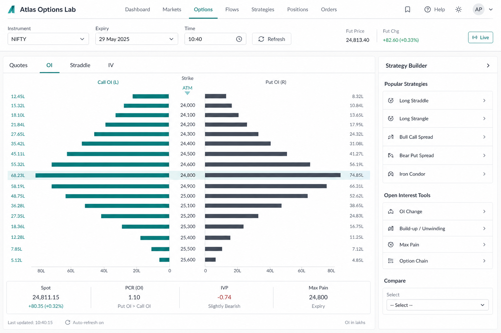
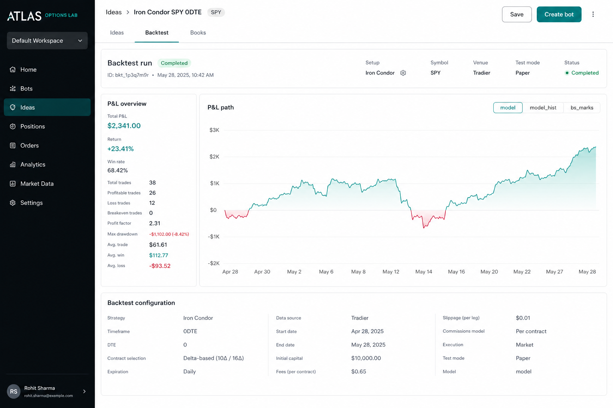
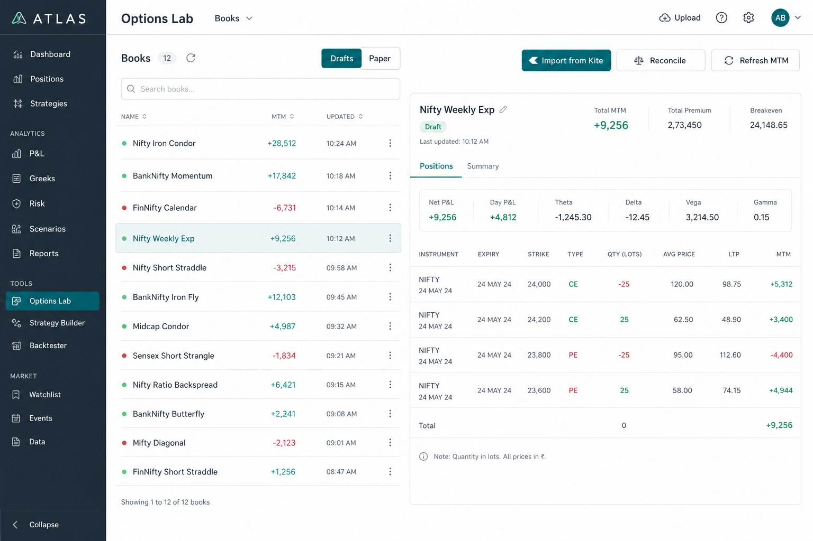
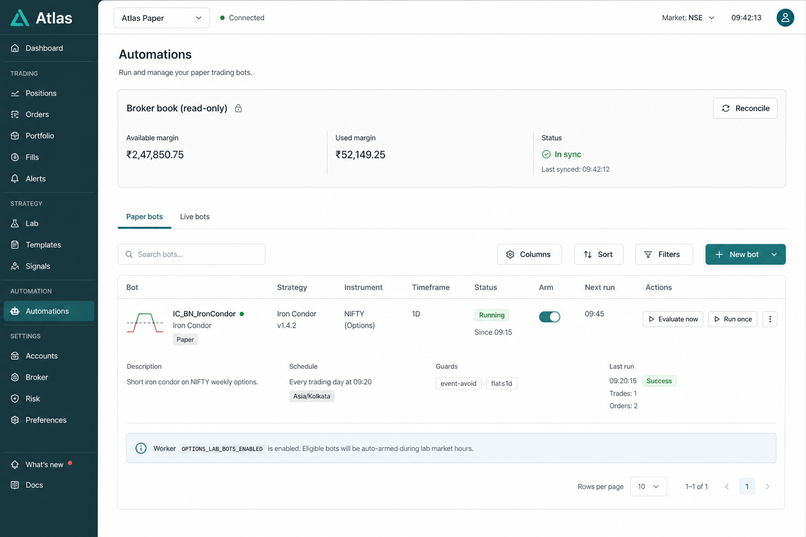

Chapter 1
What Options Lab is (and is not)
Atlas Options Lab is your live India options desk: chain, OI/IV context, strategy builder, books, backtests, and paper automations — wired to Kite when tools are bound.
Lab is
- A desk to see, build, paper, and carefully place multi-leg books
- A place to reconcile Lab books vs broker positions
- Paper bots with gates, SL/TP %, event-avoid, DTE flat
Lab is not
- A guarantee of profit
- A full OMS / fill simulator
- “Set and forget” live auto-trading (live never auto-fires)

Chapter 2
Options in 10 minutes (India F&O)
Calls and puts
- CE (Call): right to buy at the strike — buyers usually want the market up.
- PE (Put): right to sell at the strike — buyers usually want the market down.
- You can buy (debit / loss ≈ premium) or sell (credit / loss can be large — always define risk).
Premium, lots, expiry
- Premium = option price (₹ per share).
- India index options trade in lots. Builder qty is usually lots; Kite positions are shares. Reconcile compares in lots.
- Theta hurts long premium and helps short premium — faster near expiry.
| Greek | Rough meaning |
|---|---|
| Delta | Premium move if spot moves ₹1 |
| Gamma | How fast delta changes (ATM / near expiry risk) |
| Theta | Daily time decay |
| Vega | Sensitivity to implied volatility |
| IV / IVP | How expensive options are vs history |
You do not need perfect Greek math to start — you do need a defined view and a defined exit.
Chapter 3
Before you open the Lab
- Kite session valid (access token renews ~daily)
- Signals ops / Live teams published with Kite tools bound
- Lab setup: underlying, FUT for the chain month, strike step, Mock off
- Written rules: max loss/day, max lots, no revenge size-up
In the Stock Broker workspace, use the desk tabs:
- Signal Engine — checklist / macro gates
- Options Lab — chain + builder + Ideas / Backtest / Books
- Automations — paper bots + Reconcile
Chapter 4
First paper session — step by step
Step A — Setup bar
- Open Options Lab.
- Pick preset (NIFTY / BANKNIFTY / …).
- Confirm FUT matches the expiry you want.
- Confirm Mock is off for live quotes.
- Wait until Spot / ATM / PCR-style strip populates.
Step B — Read the market (Quotes · OI · Straddle · IV)
Stay on the left shell — do not skip this.

| Tab | Ask yourself |
|---|---|
| Quotes | Where is ATM? Liquid? Spreads wide? |
| OI | Where are walls / build-up? |
| Straddle | Is ATM straddle rich or melting? |
| IV | Is IV / IVP elevated? |

If you cannot explain why the trade fits the day in one sentence, do not build legs yet.
Step C — Build a strategy
- Open the strategy rail (Builder).
- Start with a defined-risk template (spread or iron condor) — not naked shorts on day one.
- Check payoff, net premium, rough delta.
- Check margin before any place.
- Prefer paper place first.
Step D — Ideas → Backtest
- Ideas — screen candidates; send one to Backtest.
- Run model / hist / BS marks — treat as scenario, not prophecy.
- Save a run; optionally Create bot (paper, event-avoid, flat ≤ 1 DTE).

Step E — Books
- Save drafts from Builder, or Import from Kite.
- Watch MTM; use GTT when tools are bound.
- Hit Reconcile — qty compared in lots; Kite import books may show shares.

Step F — Automations (paper until proven)
- Add / arm a paper bot with schedule, gates, SL/TP %, event-avoid, max DTE hold.
- Evaluate now, or wait for the worker when
OPTIONS_LAB_BOTS_ENABLEDis on. - Live never auto-fires — live Run once is HITL confirm.
- Reconcile for available / used margin vs Lab OPEN and books.

Chapter 5
How to start trading
- Week 1–2: Paper only. Same setup every day. Log why you entered/exited.
- First live: One defined-risk spread, 1 lot, SL/target or GTT, hard daily loss stop.
- Never jump from a winning paper day to max size live.
- Keep Reconcile green (or understood) before adding size.
Chapter 6
How to be careful on the market
Session
- Prefer liquid underlyings and strikes.
- Respect event-avoid (NSE holidays, FOMC) unless your playbook says otherwise.
- Wide bid–ask + low OI → size down or skip.
Position
- Know max loss before click (especially short premium).
- One thesis per book — do not stack correlated shorts “because IV is high.”
- After a stop-out: stop for the day if that is your rule.
Ops
- Mock off for real decisions.
- Watch used margin and util % on Reconcile, not only available cash.
Chapter 7
How to avoid large losses
Pros survive by cutting left-tail risk, not by predicting every move.
| Practice | Why |
|---|---|
| Defined risk (spreads / condors with wings) | Caps disaster vs naked short |
| Hard daily loss limit | Stops revenge trading |
| Size from risk, not from feeling lucky | One bad day ≠ account damage |
| No averaging losers without a new thesis | Often doubles the mistake |
| Exit plan before entry | SL %, target %, time stop, or DTE flat |
| Reconcile Lab vs broker | Stops ghost books and wrong lot math |
Selling options: credit looks easy until one gap — know margin and wing distance. Buying options: limited loss, but high chance of 100% premium loss — need catalyst and a time box.
Chapter 8
How to approach profits
Profits come from repeatable edge + risk control, not one heroic trade.
- Context — Signal checklist + OI/IV/straddle agree with a clear bias.
- Structure — Template matches the bias.
- Price — You are not paying silly mid with no liquidity.
- Exit — Take profit per plan; cut losers per plan.
- Review — Books MTM + journal: process vs luck.
What usually destroys P&L
- Overtrading after a win or loss
- Ignoring event days / holidays
- Naked short “income” without wings
- Holding losers into expiry “for a bounce”
- Treating paper bot wins as proof of live edge
Chapter 9
Daily operator loop
Pre-open
- Kite session OK
- Lab FUT + mock correct
- Signal Engine: any hard NO-GO?
- Know max loss for the day
During
- Quotes → OI → Straddle/IV before Builder
- Margin check → paper or small live
- GTT / SL-TP when live
- Reconcile after fills
Post
- Flat or sized for overnight intentionally
- Disarm bots if you leave the desk
- One-line journal: thesis / result / lesson
Chapter 10
Lab map
| Surface | Job |
|---|---|
| Setup bar | Underlying, FUT, strike step, mock |
| Quotes / OI / Straddle / IV | Market context |
| Builder + payoff | Construct & sanity-check risk |
| Ideas | Candidate structures |
| Backtest | Scenario / hist / BS marks |
| Books | Draft / paper books, MTM, GTT, Reconcile |
| Automations | Paper bots, Evaluate, Reconcile, event-avoid / DTE flat |
Broker truth: Kite positions & margins remain authoritative. Lab Reconcile is the bridge — it does not replace the broker app.
Related Markdown: Instructions/StockBroker/OPTIONS_LAB_GUIDE.md · Kite bind list in tools/KITE.md.
Survive first. Size second. Edge third.